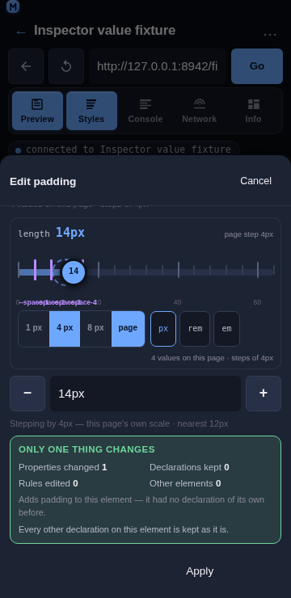
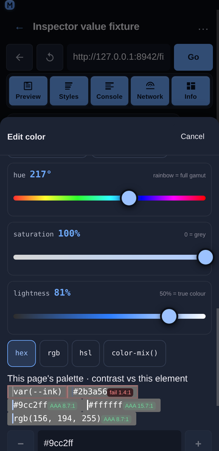
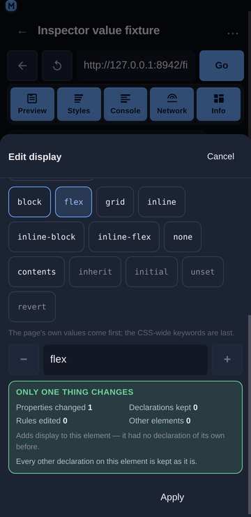
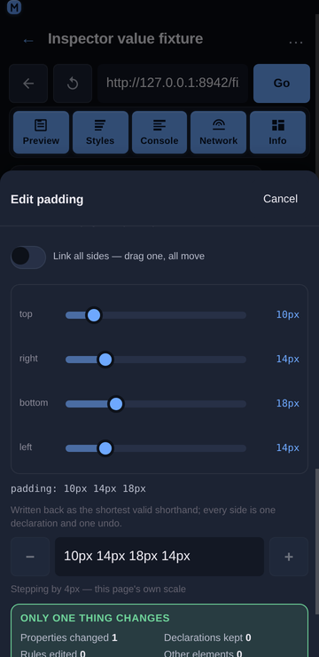

Inspector value rail
Overview
The edit sheet's value field is the source of truth: it is where a value comes from, where a suggestion lands, and what Apply commits. What it is bad at is choosing a number on a phone — the range is invisible, the page's own steps are invisible, and trying 14px instead of 16px costs four taps on a keyboard. The value rail is therefore one numeric changer for every numeric kind: a track whose ticks are the values this page already uses, a thumb you drag, a precision segment, a unit chip, and the before → after readout in its header.

Usage
Open the edit sheet for a numeric property (tap a declared row, or a quick-add chip such as padding). The rail sits directly above the value field, under the page's own values and tokens.
Drag the thumb. The value field updates live; nothing is written to the page. Release, then Apply to commit — exactly like the type switch and the suggestion chips.
Drag normally for whole steps, slowly for fine. The coarse step is what makes the gesture usable (a 340 px rail over 0…32 px is ~10 px per unit); a slow drag drops to the family's finest step so 13 px and 14 px are both reachable. The header says
fine 1pxwhile it is in force, because the same thumb moving 1 px and then 4 px inside one gesture otherwise looks like a bug.Double-tap the track for the keypad. One tap writes the value under the finger; a second tap in the same place (within 300 ms and 24 px) focuses the typed field, because "nearly 14 px" is the moment exact typing is the next move.
Tap-hold a tick to lock to it. A 500 ms press writes the tick's value and marks the tick, and the header reads
locked · --space-3. The next gesture releases it — a lock describes the value in force, not a mode.
Tap a tick. The labelled round numbers (
0 20 40 60) are buttons: one tap lands the value on that number. A violet tick is a design token, and tapping it writes the token's value (--space-3 = 12px→12px). A green tick is a fraction of this element —¼,½or1of its own size — and tapping it writes that number (½ of this element = 32px). Fractions are only drawn when the sheet read the element's real size: they are a statement about this element, so the rail does not invent them from its own default basis.Pick a step. The precision segment offers three steps for this value's kind —
1 px/4 px/8 pxfor a length,0.01/0.05/0.1for an opacity,10 ms/50 ms/100 msfor a duration — pluspage, which uses the step the value index derived for this property from the page's own values (steps of 4px), and which is the same step the−/+buttons in the value row use.
The segment cannot be one ladder for everything: a 0–1 opacity range quantized to 1 can only ever write0or1, and a 0–2000 ms range quantized to 1 puts the whole gesture in two pixels of travel. Each family therefore states its own, and the header says which one is in force and where it came from —page step 4px,0.05 step, orstep 10ms.Cycle the unit. The unit chip rewrites the same value in another unit (
px⇄rem⇄em,ms⇄s,deg⇄turn⇄rad), using the page's real root font size rather than an assumed 16 px. Beside the chips the footer prints the conversion before you spend the tap:px = 0.875rem. A unit whose base size the inspector has not read is shown ticked-out, and then no equivalent is printed for it either.Read the header. It states the kind, the value the property had before this session's first edit on it (struck through), the value now, and the step in force:
length 16px 44px page step 4px.No rail is stated, not hidden. A value with no numeric range (a keyword, a colour,
calc(), an unparsable expression) rendersNo rail: this value is not a number, so there is nothing to drag.— the typed field stays the only control, which is the honest fallback rather than a disabled slider.Leaving the scale is one tap, and so is coming back. A value that is off the page's scale draws the dashed ghost ring at the nearest on-scale value; the rail's footer then offers leave scale, which keeps the value as it is, stops drawing the ghost, and switches the drag to the family's finest step. Tapping use scale puts the page's own step and the ring back. The sheet's hint is the other direction of the same decision (
Snap to 16px).The value being typed is placed on the page's scale. When the field holds a value that is not one of the page's own, the rail draws the nearest on-scale value as a dashed ghost ring, and the suggestion row above it names the same value with a one-tap snap.
Every kind, and the view it gets
The rail is the right changer for a number. It is the wrong control for a colour (three numbers that only mean something together), for a four-sided shorthand (four numbers that are one declaration), for a function list (an ordered list of rail-shaped arguments) and for an enum (not a number at all). The edit sheet therefore picks a view per kind, in the ladder the mock states: a numeric kind gets the rail, a numeric shorthand fans out, a known keyword set gets segments, a list of functions gets one rail per argument, and anything else falls back to the typed field with the reason stated.
The view is chosen from the value the property holds when the sheet opens, and held for as long as the sheet is open: dragging one side with "link all sides" on turns 10px 14px 18px 14px into 12px, and the four rails must not collapse into a single slider under the user's finger.
| Kind | View | Properties |
|---|---|---|
Length, number, percent, scale(), custom property holding a number | The rail | padding: 14px, opacity: 0.5, --space-card: 14px |
| Colour | Three rails (hue / saturation / lightness), the page's palette with per-swatch contrast badges, hex / rgb / hsl / color-mix() format chips | color, background-color, border-color, --brand |
| Fan-out | One sub-rail per side plus a "link all sides" switch | padding, margin, inset, border-width, border-radius, gap, background-position |
| Enum | Segmented keyword chips, the page's own values first and the CSS-wide keywords last | display, position, overflow, text-align, flex-direction, align-items |
| Functions | One rail per argument, or one row per item for a comma list | transform, filter, box-shadow, text-shadow, transition, animation |
| Image | The page's own images and gradients as candidates — no rail | background-image, mask-image, list-style-image |
| Time / Angle | The rail plus its unit segment | transition-duration, animation-delay, rotate, hue-rotate |
| Anything else | The typed field, with a note saying why there is no view | font-family, content, calc(), var() |
Colour

Three rails instead of one, because a colour is three numbers that only mean something together, and because each rail's track can then be a picture of the value: the hue track is the full gamut at the current saturation and lightness, the saturation track runs grey → colour, and the lightness track runs black → colour → white.
HSL is kept as HSL. A typed
hsl(220, 38%, 15%)becomesrgb(24, 33, 53), whose own hue is 221.7° — so a rail built from the pixels would read 222° for a value the user typed as 220°, and dragging it one step would write a colour they did not ask for. The parse keeps the original H/S/L where the value has it.The palette shows the ratio before Apply. Each swatch carries its WCAG badge against the element's resolved background (
#2b3a56 fail 1.4:1,#9cc2ff AAA 8.7:1), and a failing swatch takes the danger styling. Candidates are capped at five, because a swatch with a value and a badge is three times the width of a plain chip.**The format chips rewrite the form, not the colour.**
hex/rgb/hsl/color-mix()pick how the rails write back, and the choice survives a drag — which is the difference between a colour view and a converter.color-mix()is an exact rewrite, not an approximation. The mix form is the colour at the weight of its alpha, mixed withtransparent:
rgba(110, 168, 254, 0.425) -> color-mix(in srgb, #6ea8fe 42.5%, transparent) In sRGB that leaves the channels untouched and takes the alpha as the weight of the first stop, so the declaration resolves to the colour that was on screen and the rails can keep dragging it. The percentage keeps four decimals, so a 0.425 alpha does not become 0.43. The parser reads the same shape back — including a first stop of rgb(110, 168, 254), whose own commas must not be mistaken for the mix's — and any other mix (in oklab, a second stop that is not transparent, malformed stops) is left to the typed field with the reason rather than approximated.
currentcoloris explained, not clamped. It is a keyword whose value is another property's, so the view says so and leaves the typed field as the control.The palette is rendered once: while the colour view is up, the suggestion row above drops its own colour group rather than showing the same candidates twice.
Time and angle
The rail is the changer; the unit segment is what the kind adds. Time cycles ms ⇄ s and angle cycles deg ⇄ turn ⇄ rad, each converting the current value so the write is the same duration or rotation in another unit (180ms ⇄ 0.18s, 12deg ⇄ 0.0333turn). The angle rail's range is −180…180 and its snaps are the right angles the mock lists — 0° / 45° / 90° / 180°, plus their negatives.
A time rail adds the durations a transition actually uses, one tap each:
transition-duration 0.18s [ 0.1s ] [ 0.15s ] [ 0.2s ] [ 0.3s ]The mock's four are 100 / 150 / 200 / 300 ms, and they earn a row of their own because a 0…2000 ms rail is roughly 10 ms per pixel on a phone: 150 ms is not a value a thumb can reliably hit. The chips are written in the rail's own unit — a value in seconds offers 0.15s, not 150ms — and a preset the range cannot hold is dropped rather than clamped. transition-timing-function and animation-timing-function get the other half of the mock's row: their easing keywords are a real choice set, so the enum view offers ease / linear / ease-in / ease-out / ease-in-out / step-start / step-end, the page's own usage first and the CSS-wide keywords last, which beats tapping cubic-bezier(0.4, 0, 0.2, 1) out on a phone.
Enum

display at 360 px" loading="lazy" />Segmented keyword chips, ranked: the values this page uses first (in the order the index reports them, so flex beats grid on a page that uses flex more), then the property's own spec set, then the CSS-wide keywords last. A value the page uses is marked, because it is the likelier choice.
The view only appears for a property with a real choice set — two or more of its own keywords. keywordsFor always appends inherit / initial / unset / revert, so a "more than one keyword" rule would make every keyword an enum and give transform: none a five-chip row of which four are the CSS-wide ones.
Functions and comma lists
One rail per argument, each typed by its own kind, with the item's name as the row label:
transform [▲] [▼] [✕]
arg 1 translateY(−4px)
arg 2 scale(1.02)
Add [ translateX ] [ rotate ] [ skewX ] [ skewY ] [ none ]A property that is a list of shorthands rather than of function calls (box-shadow, transition) gets the same view with its items split on the top-level commas instead of on function names, so a shadow's four values are four rails and a two-item transition list is two rows. Splitting is bracket-depth aware, which is what keeps rgba(0, 0, 0, 0.4) and calc(100% - 2px) in one piece.
Add carries a real default, or it is not offered.
FUNCTION_CATALOGholds the functions worth adding per property with one valid argument each (rotate(45deg),blur(4px),scale(1.05)), because an add button that producestranslateX()would write a broken declaration. The catalogue is short on purpose — a property with twenty addable functions is a menu, not a control — and a function the value already contains is not offered again; edit the one that is there.Reorder is part of the value, not tidiness. A transform list is not commutative (
translateYthenscaleis notscalethentranslateY) and a filter list runs in order, so▲/▼move an item one place through the samejoinFunctionswrite as any other edit. The end stops aredisabledrather than removed, so the row does not reflow under the finger mid-edit. The comma-list branch reorders throughjoinListItemsfor the same reason.noneis a chip, not an empty field. It is a real declaration for these properties (transform: none), so the row offers it directly rather than making the user delete the last function to reach it, and an emptied list falls back to it.
Fan-out

A four-value shorthand becomes four sub-rails, with the value line under them showing what will be written:
padding: 10px 14px 18px 14px
top [───●────] 10px
right [────●───] 14px
bottom [─────●──] 18px
left [────●───] 14px
padding: 10px 14px 18pxThe expansion is CSS's own rule, not a guess: one value repeats four times, two values repeat as a pair, three repeat the second for the left, four are as written.
gapandbackground-positiontake two values rather than four, and are fanned out as a pair."Link all sides" starts on for a shorthand that is already uniform. That is the state the user is in; starting it off for
10pxwould make the first drag surprising.Write-back is the shortest valid form for display (
10px 14px 18px 14px→10px 14px 18px, four equal values →10px). The full shorthand round-trip guarantees, including the longhand fallback for values that cannot collapse, land withshorthandForin R3 — until then a fan-out edit writes the collapsed shorthand, which is what the view shows.A shorthand that cannot be taken apart is refused with its reason.
padding: inheritandpadding: calc(100% - 2px)have no sides to drag, so the view says so and the typed field stays the control.
Image and text
An image is not a number, so the image view offers the page's own url() and gradient values instead of a rail — the honest alternative to dragging nothing. content is not an image property: it takes a url() but it is a text value first (content: "→", counter(x), attr(data-label)), and the mock lists it under STRING, so it gets the string view; routing it to the image view gave a text value a panel with no candidates in it. Everything else (an unparsable value, a keyword with no choice set, a font stack) renders the typed field with a one-line note stating why there is no view. Nothing is ever a silently disabled control with no explanation.
A string value has no rail and no per-kind view, so what it gets is the page's own values plus the keyword forms:
font-family
On this page · 2 values [ Inter, system-ui, sans-serif 1× ] [ Georgia, serif 1× ]
Keywords · valid for any property [ inherit ] [ initial ] [ unset ] [ revert ]
cursor
On this page · 2 values [ pointer 2× ] [ grab 1× ]The stacks and the cursors are the page's own declarations (the group above); the keyword row is the half a string value could not reach at all, because text is the shape with no view of its own. keywordsFor supplies a property's own words first (cursor → auto, default, pointer, …) and the CSS-wide four last, the row is capped at six, the word already in the field is not offered back, and an enum-shaped property does not get the row — it renders its own chips, and two copies of the same list is worse than one.
Write-back: what the page reads back
A fan-out edit drags four sides, and what the sheet writes has to be both the shortest valid form and something the page reads back as the same four values:
10px 10px 10px 10px -> 10px
10px 20px 10px 20px -> 10px 20px
4px 8px 12px 8px -> 4px 8px 12pxThe CSS rules are the whole of the arithmetic (all equal → one; top == bottom and left == right → two; left == right → three; otherwise four), and there are three cases where the value must not be collapsed:
A
var()side. An unresolvable custom property invalidates the whole shorthand at computed-value time, so folding four sides into one would spread a single missing variable across all four.env()andattr()are refused for the same reason. The view still shows the four sub-rails and the value line, and the note saysNot rewritten from here: a custom property cannot join a shorthand….A value that would re-split. A side containing top-level whitespace (
1px 2px) cannot sit in a shorthand, because the parser would read it as two sides. A parenthesisedcalc(1px + 2px)is fine — it is one token.A
border-radiuspair.8px 8px 12px 12pxis four values; the two-value form ofborder-radiusis the slash form (8px / 12px), a different declaration. Where the corners would collapse to a pair, they are written as the four corner longhands instead.A shorthand is expanded by the browser the moment it is set: after writing
padding: 24px 14px 18px,element.stylereportspadding-top,padding-right,padding-bottomandpadding-leftand notpadding. The target bar's origin sentence and the panel's scope summary therefore look a property up through its longhands too, and say so:
padding: 24px 14px 18px is set on element.style (expanded to padding-top and its
siblings), which wins this value for this element only.Without that fallback the bar would claim padding has no declaration on this element seconds after the user wrote one.
Undo restores every side. One fan-out drag is one receipt entry (padding — → 24px 14px 18px), because the write is one declaration: recordChange merges same-property edits and keeps the original from value, so Undo all returns an element that had no padding of its own to exactly that state — no inline style at all — and the origin sentence goes back to naming the stylesheet rule. A value the sheet wrote is re-read after the write (inline declarations and the matched-rules entry), so the pinned preview, the Declared list, the Computed list and the origin sentence all describe the same page.
Behaviour
The rail never writes to the page. It only rewrites the sheet's value field, so a drag is one property and one undo receipt entry, and the element's other declarations are untouched. Verified live: after a full drag the inspected element's
styleattribute is still empty, and it changes only after Apply.The rail never touches another property. The only write path is the same
style.setPropertythe rest of the sheet uses, addressed at the property the sheet was opened for.Ranges are per property family, not global.
opacityis 0…1,line-height0…3,z-index−10…100, an angle −180…180 (0…360 for a hue), a time 0…2000 ms, ascale()0…3, a percentage 0…200, and a length 0…4× the element's own size.A length is measured against the right size. A box property (
width,top,max-height) is scaled by the element's box; a spacing, radius or type property is scaled by the element's font size, because a16pxpadding measured against a 448 px card would sit at 0.9% of the rail — technically "4× the size" and impossible to drag.A logarithmic scale is used only where it helps. A range whose maximum is at least 100× its minimum (
1px … 1000px) is mapped logarithmically, which is the only case where a linear thumb spends most of its travel on values nobody wants. A range that starts at 0 is always linear, because a rail that cannot reach its own minimum is worse than a coarse one.The value in force is always on the rail. If the property's current value sits outside the family's usual bounds (
z-index: 400), the range grows to include it rather than parking the thumb at an end and reading a different number than the page holds.Ticks are capped so they stay ticks. A 0…2000 ms range at a 10 ms step would be 200 marks ~1.7 px apart on a phone: the step is widened to the next multiple that fits 40 ticks, keeping the ticks on multiples of the page's step. A range with no page step gets ten evenly spaced ticks, which is the most the rail can show without implying precision it does not have.
Tokens are dropped rather than approximated. A token outside the range, in another unit, or holding something that is not a number is not ticked — a violet mark at the wrong place is worse than no mark.
Three tick families, three jobs. A grey tick is a step, a dark tick is a round number you can tap, a violet tick is a design token, and a green tick is a share of this element.
fractionSnapsderives the fractions from the rail's own maximum (range.max / 4is the element's size in the value's unit), so a rem rail gets rem fractions with no conversion of its own, and a fraction that would fall outside the range is dropped rather than drawn off the end.A drag never churns the field. Writing the value the field already holds is a no-op, so a tap on the track cannot wipe a half-typed value.
The gesture is one pointer capture, no drag library. The track is 60 px tall with
touch-action: none, so the sheet's vertical scroller cannot claim a horizontal drag and the moves keep arriving after the finger leaves the track. Arrow keys work too (Left/Right, Down/Up), which costs nothing and makes the control usable with a keyboard.Every control is a ≥44 px target: the thumb is 34 px of ink inside the 60 px track, the tick labels carry 44 px hit areas without widening their marks, and the segment and unit chips are 44 px tall.
Nothing scrolls sideways. The rail is 336 px inside the 360 px sheet, its labels are absolutely positioned inside the track, and the sheet body and the page both measure
scrollWidth − clientWidth = 0.
Related
Inspector value suggestions — the page's own values, the snap hint and the contrast badges.
Inspector value types — switching a value between length, number, percentage and keyword.
Inspector non-destructive editing — what an edit changes, what it keeps, and how to undo it.